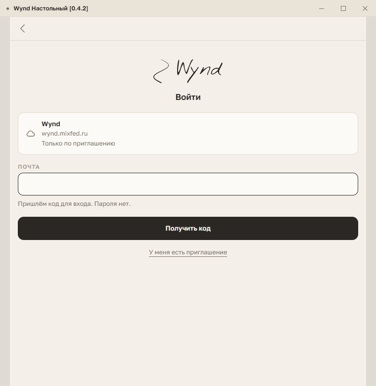
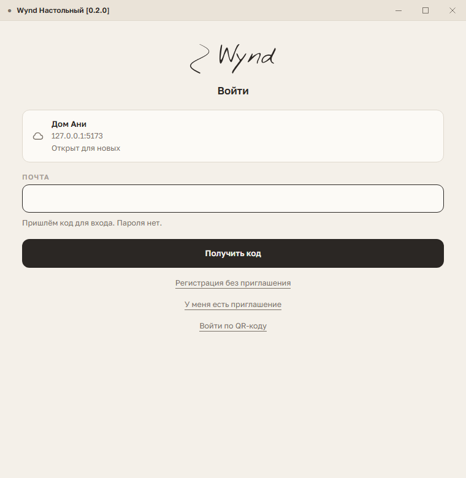
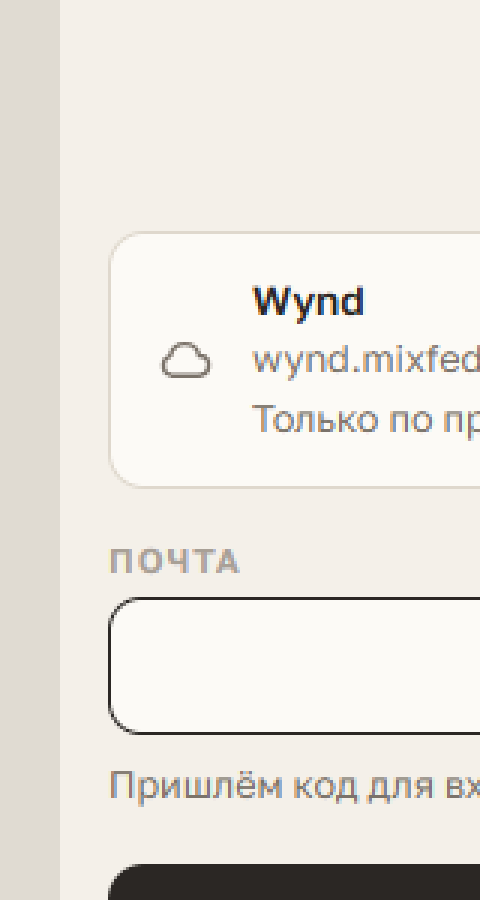
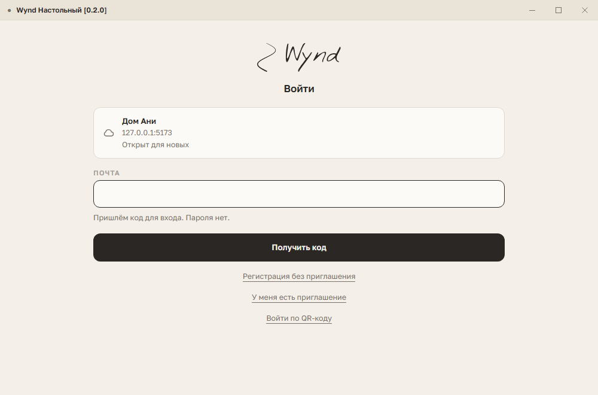

Окно без полос-подложки
Решение «убрать в окне» (26.11). До — снимок настоящего окна владельца, 760 × 780. После — настоящий рендер shell + клиент: vite 5179 и 5173, API — стенд 7678, headless Edge, DPR 1, светлая тема. Колонка интерфейса осталась 720; браузер и PWA не тронуты.
До — полосы 20 px

#e0dbd2 по 20 px: на 760 она читалась рамкой-артефактом.
После — бумага до краёв

Край до правки

После на ширине утверждённых кадров — 1000 × 660

Адрес 127.0.0.1:5173 и «Открыт для новых» в карточке — это локальный
стенд, а не боевой сервер; версия в заголовке мока 0.2.0. На предмет кадра — фон окна
— не влияет.